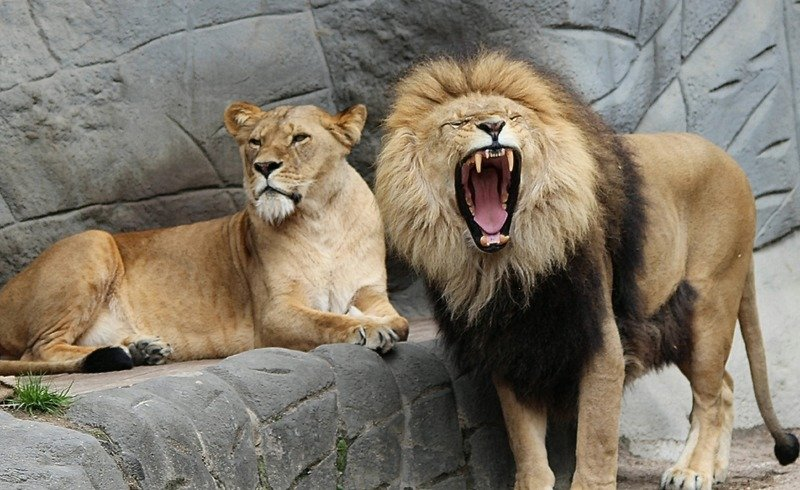

Animals are living organisms that belong to the animal kingdom. They come in a wide variety of shapes, sizes, and habitats, living on land, in water, and in the air. Most animals can move, respond to their environment, and require food, water, and oxygen to survive. They play important roles in maintaining the balance of ecosystems by serving as predators, prey, pollinators, and decomposers. Animals also differ in their diets, with some being herbivores that eat plants, carnivores that eat other animals, and omnivores that consume both plants and animals. They reproduce in different ways, such as laying eggs or giving birth to live young. Many animals live in groups for protection and cooperation, while others live alone. Their unique adaptations, such as camouflage, sharp claws, wings, or fins, help them survive in their environments. Humans rely on animals for food, transportation, companionship, and scientific research. Protecting animals and their natural habitats is essential for preserving biodiversity and ensuring the health of our planet for future generations.
Classification of animals
Based on characterstics animals are classified as:
- Mammals: Have hair or fur and feed their babies milk.
Examples: Lions, elephants, dogs, whales. - Birds: Have feathers, wings, and lay eggs.
Examples: Eagles, parrots, penguins. - Fish: Live in water, breathe through gills, and have fins.
Examples: Salmon, sharks, goldfish. - Amphibians: Live both in water and on land.
Examples: Frogs, salamanders. - Reptiles: Have dry, scaly skin and are cold-blooded.
Examples: Snakes, crocodiles, turtles. - Insects: Have six legs and three body parts.
Examples: Butterflies, ants, bees.
Based on where there habitat:
- Terrestrial animals 🐂
- Aquatic animals 🐬
- Arboreal animals 🐒
- Amphibious animals 🐊
